Pictorial cancels in British Columbia
We have recorded 36 pictorial cancels in this province. 30 are still in use and can be requested from the post office, in person or by mail.
In use (30)
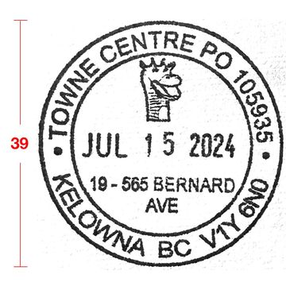
Towne Centre Card ShopOgopogo: a lake monster, fictional creatureActive · ?–present Ashcroft POOld fire brigade buillding, sun, tree, fish, riverActive · ?–present
Ashcroft POOld fire brigade buillding, sun, tree, fish, riverActive · ?–present Bamfield POTHE ALL-RED LINE AROUND THE WORLD / LA LIGNE ROUGE AUTOUR DU MONDEActive · 2023–2034
Bamfield POTHE ALL-RED LINE AROUND THE WORLD / LA LIGNE ROUGE AUTOUR DU MONDEActive · 2023–2034 Campbell River STN AFirst NationActive · ?–present
Campbell River STN AFirst NationActive · ?–present Charlie Lake POFishActive · ?–present
Charlie Lake POFishActive · ?–present Cobble Hill POGrapesActive · 2019–2030
Cobble Hill POGrapesActive · 2019–2030 Duncan STN MainTotemActive · ?–present
Duncan STN MainTotemActive · ?–present Houston POThe World's Largest Fly RodActive · ?–present
Houston POThe World's Largest Fly RodActive · ?–present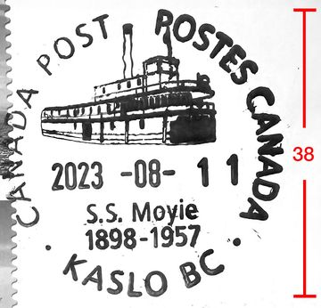
Kaslo POS. S. Moyie 1898-1987Active · ?–present Langley STN Fort LangleyThe birthplace of BC / 1858Active · ?–present
Langley STN Fort LangleyThe birthplace of BC / 1858Active · ?–present Lantzville POEagle on a tree trunkActive · 2016–2027
Lantzville POEagle on a tree trunkActive · 2016–2027 Logan Lake POTrees, lake, fishes, farm, machinery, cloudsActive · ?–present
Logan Lake POTrees, lake, fishes, farm, machinery, cloudsActive · ?–present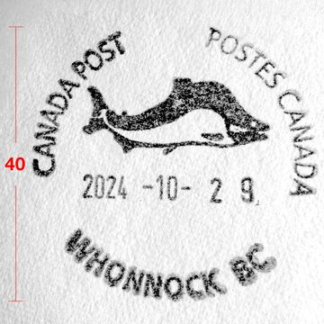
Maple Ridge STN WhonnockHumpback salmonActive · ?–present Mount Lehman POManActive · ?–present
Mount Lehman POManActive · ?–present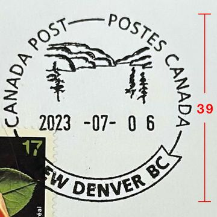
New Denver POMountains, treesActive · 2021–present Peachland POOgopogo: a lake monster, fictional creatureActive · 2023–present
Peachland POOgopogo: a lake monster, fictional creatureActive · 2023–present Prince George STN AThe Royal Infant / La poupon royalActive · ?–present
Prince George STN AThe Royal Infant / La poupon royalActive · ?–present Princeton POWhere Rivers MeetActive · ?–present
Princeton POWhere Rivers MeetActive · ?–present Saanichton STN MainVehicleActive · ?–present
Saanichton STN MainVehicleActive · ?–present Salt Spring Island STN Fulford HarbBird, mountainActive · 2023–present
Salt Spring Island STN Fulford HarbBird, mountainActive · 2023–present Salt Spring Island STN GangesOrca (killer whale), waterActive · 2024–present
Salt Spring Island STN GangesOrca (killer whale), waterActive · 2024–present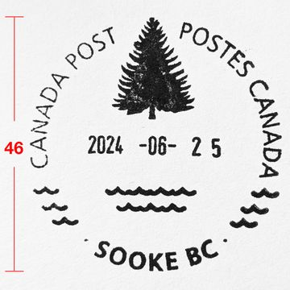
Sooke STN MainTreesActive · ?–present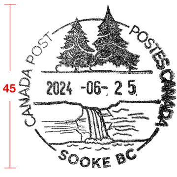
Sooke STN MainFallsActive · 2024–present Spences Bridge POWHERE THE STEELHEADS MEET THE BIG HORNSActive · ?–present
Spences Bridge POWHERE THE STEELHEADS MEET THE BIG HORNSActive · ?–present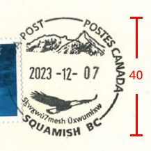
Squamish POEagle, mountainActive · 2021–present Steveston MuseumNewActive · 2026–present
Steveston MuseumNewActive · 2026–present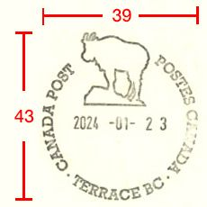
Terrace STN MainGoatActive · ?–present Tofino POSun, clouds, beach, waves, trees, surfersActive · 2024–2035
Tofino POSun, clouds, beach, waves, trees, surfersActive · 2024–2035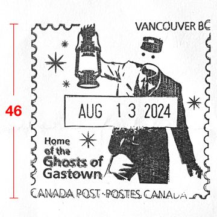
Vancouver Main Retail Store POHaunted CanadaActive · 2015–2026 Victoria Main POCanada Community FoundationActive · ?–present
Victoria Main POCanada Community FoundationActive · ?–present
Retired (6)
 Canada PostWilliam R. Bennet Floating Bridge / 2008-2018Expired · ?–2026
Canada PostWilliam R. Bennet Floating Bridge / 2008-2018Expired · ?–2026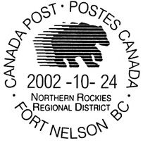
Fort Nelson PONORTHERN ROCKIES REGIONAL DISTRICTExpired · 2002–?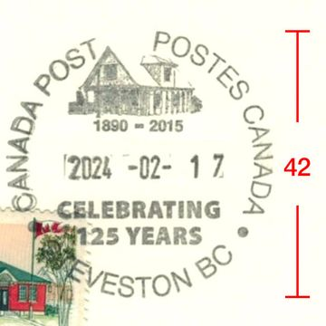
Steveston MuseumOldExpired · ?–2025 Surrey STN MainRoyal weddingExpired · 2011–2011
Surrey STN MainRoyal weddingExpired · 2011–2011 Vancouver Main Retail Store POCityscapeExpired · 2012–2023
Vancouver Main Retail Store POCityscapeExpired · 2012–2023 Whistler POSARA BURKEExpired · 2014–2025
Whistler POSARA BURKEExpired · 2014–2025
Other provinces and territories: Alberta · Manitoba · New Brunswick · Newfoundland and Labrador · Nova Scotia · Ontario · Prince Edward Island · Quebec · Saskatchewan · Northwest Territories · Nunavut · Yukon